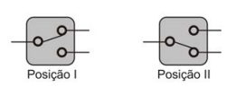

🔹 Ir para Problema 74 | 🔹 Ir para Problema 76
112. (ENEM)
Para ligar ou desligar uma mesma lâmpada a partir de dois interruptores, conectam-se os interruptores de tal modo que a mudança de posição de um deles faça acender ou apagar a lâmpada independentemente da posição do outro. Essa montagem, conhecida como ligação paralela de interruptores, utiliza uma chave de duas posições com um polo e dois terminais: na Posição I, o polo é ligado ao terminal superior; na Posição II, ao terminal inferior.

O circuito que cumpre a finalidade de funcionamento descrita no texto é:
1) Essa montagem é conhecida como ligação:
2) A finalidade é permitir ligar ou desligar a lâmpada a partir de:
Assinale a alternativa correta: